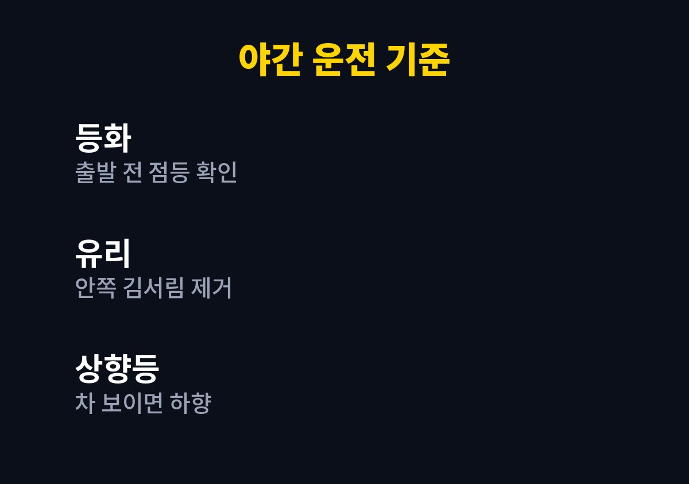
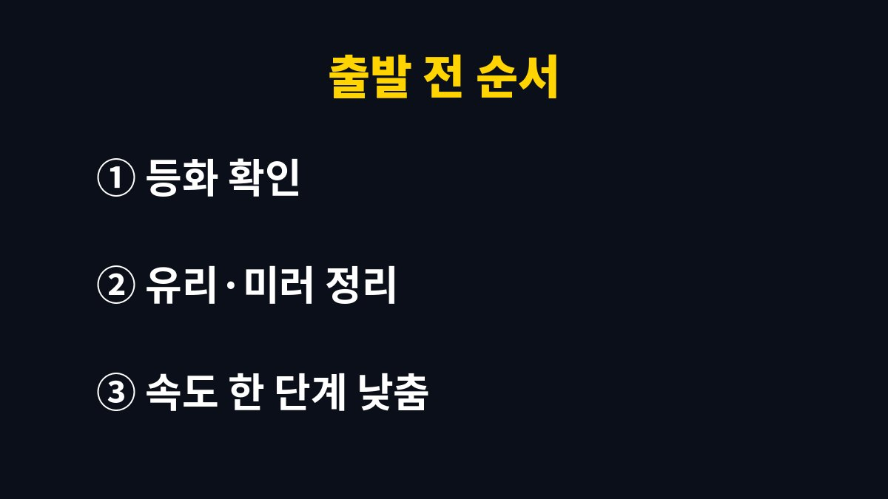

이 글은 해가 짧아진 뒤로 퇴근길 어둠 속 운전이 부쩍 부담스러워진 사람을 위해 쓴 글이다.
2026년 11월 기준으로 경찰과 도로교통 관련 기관이 꾸준히 안내해 온 야간 운전 수칙과 내가 직접 바꿔 본 습관을 함께 정리했다.
나도 택배 마감을 끝내고 아이들 학원 픽업을 나서는 저녁길에서 몇 번 가슴을 쓸어내린 뒤에야 습관을 손보기 시작했다.
여름에는 환하던 퇴근길이 11월이 되면 금세 깜깜해진다.
시간표는 그대로인데 운전 환경만 바뀌니 몸이 적응할 틈이 없다.
특히 해가 지는 무렵은 눈이 밝기 변화에 따라가지 못해 사람과 물체가 잘 보이지 않는 시간대다.
내가 가장 놀랐던 순간은 골목 끝에서 검은 패딩을 입은 사람이 갑자기 나타났을 때다.
헤드라이트를 켜 두었는데도 거리가 꽤 가까워질 때까지 형체를 알아보지 못했다.
운전 교육에서 말하는 증발현상, 즉 마주 오는 차 불빛과 내 불빛 사이에서 보행자가 사라진 듯 보이는 현상을 그때 처음 실감했다.
반대편 차의 상향등이나 밝은 전조등을 정면으로 보면 잠깐 앞이 하얗게 된다.
이를 현혹현상이라고 부르는데, 짧은 순간이라도 앞이 안 보이는 시간이 생긴다는 점이 무섭다.
아이들을 뒤에 태운 날에는 이 몇 초가 유난히 길게 느껴졌다.
야간 운전의 기본은 내가 잘 보고, 남에게 잘 보이는 것이다.
도로교통법은 밤에 도로를 지날 때 전조등과 차폭등, 미등 같은 등화를 켜도록 정하고 있다.
그래서 출발 전 등화가 모두 들어오는지와 앞유리 안쪽 김서림, 와이퍼 상태를 먼저 보는 것으로 기준을 잡았다.
점검이라고 해서 거창한 것은 아니다.
주차장 벽에 불빛을 비춰 좌우 밝기가 비슷한지 보고, 손으로 앞유리 안쪽을 한번 닦아 보는 정도다.
전구가 나갔거나 렌즈가 뿌옇게 변했다면 정비소에서 차종에 맞게 확인받는 것이 안전하다.
| 확인 항목 | 보는 방법 | 내가 한 일 |
|---|---|---|
| 전조등·미등 | 벽에 비춰 좌우 비교 | 출발 전 한 번씩 확인 |
| 앞유리 안쪽 | 김서림·얼룩 확인 | 극세사 천을 차에 비치 |
| 상향등 사용 | 마주 오는 차 유무 | 차가 보이면 바로 하향 |
| 보행자 확인 | 교차로·골목 진입 전 | 속도를 먼저 줄임 |

예전에는 신호만 보고 그대로 지나갔지만 지금은 횡단보도와 골목 입구가 보이면 발을 먼저 브레이크 쪽으로 옮긴다.
속도가 낮아야 보이지 않던 보행자를 발견했을 때 멈출 여유가 생긴다.
이 습관 하나로 갑자기 급제동하는 일이 확실히 줄었다.
맞은편 불빛이 강할 때는 불빛을 정면으로 보지 않고 시선을 도로 오른쪽 가장자리 쪽으로 살짝 옮긴다.
차선과 가장자리를 기준으로 방향을 유지하면 눈이 덜 부시고 금방 시야가 돌아온다.
나는 상향등도 앞차나 맞은편 차가 보이면 바로 끄는 것을 원칙으로 정했다.
주문 정리로 밤늦게까지 일한 다음 날 저녁에는 집중력이 확실히 떨어진다.
그런 날은 바로 출발하지 않고 물 한 잔 마시고 잠깐 쉬었다가 운전석에 앉는다.
픽업 시간이 빠듯하면 아내와 일정을 바꾸는 쪽을 택했다.

야간 운전은 운전 실력보다 준비와 속도 조절의 문제라는 것을 이번에 배웠다.
특별한 장비 없이도 점검 순서와 시선 습관만 바꿔도 저녁길이 한결 덜 무섭다.
등화 밝기나 각도가 이상하다고 느껴지면 혼자 판단하지 말고 정비소에서 확인받는 것이 좋다.
다음 글에서는 연비가 좋아지는 운전 습관을 정리할 예정이다.
※ 2026년 기준 공공기관 안내와 개인 경험을 바탕으로 정리한 글이며, 차종과 연식에 따라 기준이 다를 수 있어 차량 설명서와 공식 안내를 함께 확인하길 바란다.